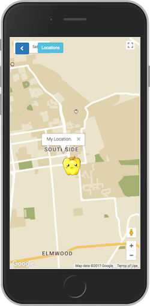

Bloom
Mobile Web Application
In our world, where we often lack meaningful connections in our day-to-day lives and even more so, a lack of understanding of how others see the world, we hope to create an application that creates more meaningful connections seamlessly.
Bloom is a group effort with some of the greatest people I've ever worked with! We knew we wanted to emulate an interaction reminiscent of a space such as a coffee shop where the main focus is interacting with your physical location, and thus by extension, with the people around you.
We thought about the physical experience of leaving your mark behind (by carving your initials into a wooden bench, perhaps?) and of coming across someone else's mark days (weeks? months? years?) later and wondering what that person was thinking in the moment.
And that was how Bloom came about!
Technology:
As a web app, Bloom was built using the Ruby on Rails framework.
On the front end, we experimented with various JavaScript libraries and plugins, and we also played around with drawing fractal trees on HTML5 canvases when we planted our seeds.
Then, we bound a user's seed to their seed location the Google Maps API and utilized Active Record to query the database for our seed messages.
